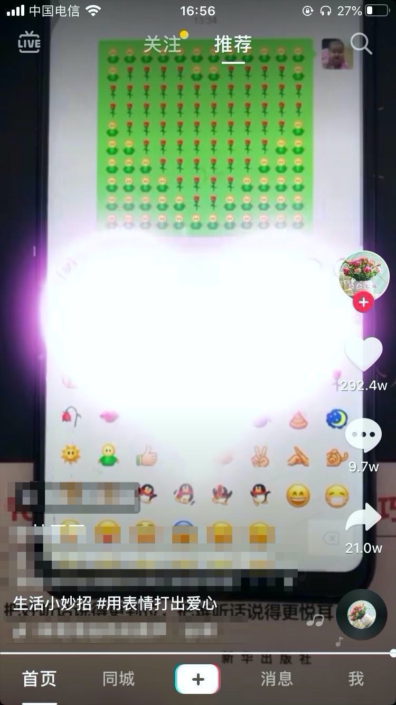

自己不专业就别瞎bb
王福强
今天在海外微博上看到一个视频，背景是：“利物浦主教練克洛普賽後被問新冠肺炎疫情，當場怒噴提問的記者”，为了方便大家观看，我就做了回大自然的搬运工：
我觉得这哥们儿的价值观特正，但是，这个世界上并不是所有人都有这个意识和认知，更不要说直白地说出来、说清楚，所以这哥们儿的言行在此刻就显得那么地鲜明。
但是现实中却有很多人不但自己不专业，还不相信专业，更是人云亦云、道听途说，对专业的人横加指责…
自疫情开始，我其实就对整个过程中的人和事儿很少评论，因为我不专业， 更主要的是，我只是一个旁观者，并未参与其中，我能做的只是不添乱而已。 但，整个过程中的纷纷扰扰却是默默地看了很多， 甚至于稍微不慎，也落入某些不管是恶意还是非恶意的信息漩涡中而不自知，比如网传“呼吸机导致病患肺部出现大量痰栓，最终致人缺氧死亡，急救改用吸痰机后，死亡人数减半。”， 其实，这个事情不是当时当刻做决策、做治疗方案并实施救治的人， 谁也说不清楚到底是不是这样，如果没有后来的反面的声音，基本上我们的思路就会被带着走了，但不管怎么样，只要不是专业人士， 不管文字描述上多么有因果，有逻辑，‘说得通’， 其实都是没有意义的，因为我们非专业人士更不没有判断的专业基础，我们只是被‘科’普的那群人，最好的策略就是，多方声音听一听，甚至于这个信息其实对你我并没有那么大的价值，忽略就好了， 对于那些拿什么人道的大棒玩道德绑架的人更是离得远远地好了， 浪费自己的时间和精力不值得， 郭德纲不是说过嘛： “内行要是和外行去辩论那就外行! 比如我和火箭科学家说，你那火箭不行，燃料不好，我认为得烧柴，最好是煤，煤还得选精煤，水洗煤不好。如果那科学家，要是拿正眼看我一眼，那他就输了!”, 说得其实就是这个道理。
抖音有个视频，教人发表情，怎么教的呢？
- 发17个拥抱表情，发两个玫瑰花；
- 发两个拥抱表情，发两个玫瑰花；
- 发5个拥抱表情，发14个玫瑰花；
- 发…
总之， 最后发送完之后得到的效果是这样式儿的：

学过编程的小伙伴可能会觉得很亲切，这不是跟我学编程时候打印字符图案的作业很像吗？ 对啊， 但是，一旦你是专业的开发者角度看这个视频的时候，你看到的东西应该超出视频给出的“知其然而不知其所以然”的范围， 你应该知道，这个方案可能不是普适的，或许在最新的iphone11 pro上没问题，但是iphone6，7，8呢？ 这也就是为啥我们要有adaptive design，为什么我们要做UAT测试， 为什么写个破程序要考虑那么多细节， 但你能跟非计算机专业的人去讲明白这些嘛？ 很难讲， 这个时候要是有哪个人跳出来说，你这个方法不对，应该是发15个拥抱表情，再发多少个玫瑰，看视频的大多数人基本就找不着北了，因为有的人是对的结果，有的人是不对的结果，哈哈哈，不知道评论区届时会是怎么样的一个景象…
很多做事的专业人士的烦恼其实都是来自外围不懂还爱瞎bb的人群，这些人群有的纯粹就是凑热闹，有的则是夹杂着自己的私利，总之，对真正专业做事的人都是不友好的，众口铄金嘛， 还有的甚至于你之前得罪了我，我就唾沫星子淹死你，曲线救国构陷你， 呵，玩得花花着呢! 所以，我一直跟做事的人讲， 做事没问题，但要学会保护自己，有些时候，宁愿慢一些， 或许事情才能做长久。
对于有良知的人，我想说， 请尊重做事的人， 尊重专业的人才， 尊重那些忍辱负重get dirty things done的人， “专业的人做专业的事”， CEO圈都知道 ；）
嗯，就说这么些吧!
「福强私学」来一个？
「福强私学」, 一部沉淀了个人成长、技术与架构、组织与管理以及商业上的方法与心法的百科全书。
开天窗，拉认知，订阅「福报」，即刻拥有自己的全模态人工智能。